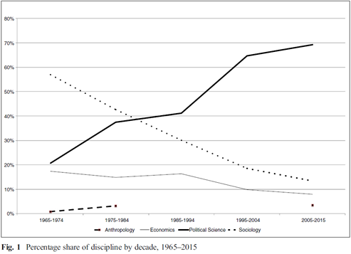
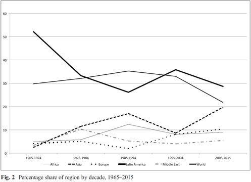
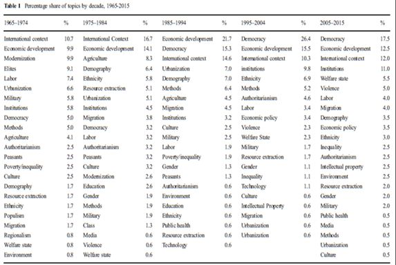

收录于合集
文献来源 ：Peter Evans and Barbara Stallings,“Development Studies: Enduring Debates and Possible Trajectories,” Studies in Comparative International Development ,March 2016, Volume 51, Issue 1, pp 1–31.
作者简介：
Peter Evans，美国布朗大学沃森国际与公共事务研究所高级研究员，美国加州大学伯克利分校社会学系荣休教授，研究方向包括发展的比较政治经济分析、国家理论等。
Barbara Stallings，美国布朗大学沃森国际与公共事务研究所威廉·罗德斯研究教授， Studies in Comparative International Development 主编，主要研究方向包括拉美和东亚的政治经济分析、国际政治经济学等。
导语
我们应该如何理解当下发展研究的争论？本文是作者纪念 Studies in Comparative International Development （以下简称SCID）创刊50周年的文章，本次编译仅对其中部分内容进行摘取。作者通过对50年来在SCID所载文章涉及的学科、地区和主题等分布情况的分析，试图向读者呈现发展研究的历史图景。为了掌握SCID在过去50年中呈现的科研成果，并且从更加广泛的层面理解发展研究的发展趋势，作者综合了文章摘要（截至2015年底共有800多篇文章）并建立了一个数据库。该数据库包括文章的地域关注、作者的学科背景以及文章的主题等方面。
一、 SCID 的学科趋势 ****
自 SCID创办以来，作者的学科归属的信息被划分为5个十年周期。图1显示了关于学科的重大变化。在第一个十年，SCID主要是社会学家的发表渠道。在1965-1974年，近60%的文章是该学科的学者所写，这个比例到了1975-1984年则是40%。然而，在接下里的几十年里，社会学的文章持续下降，到今天只占15%。它们被急剧增加的政治科学的文章所替代：从1965-1974年的20%到现在的超过70%。经济学的文章也下降了一半，从18%到9%。人类学家从未有过几篇文章，但在2015年年底发表了人类学家的特刊。

如何解释这些趋势呢？尽管经济学家依然在分析与发展相关的问题，但是他们越来越不可能在跨学科的期刊上发表。这一趋势在美国的经济学家中尤为明显。人类学家总是青睐本学科的刊物。接下来需要解释的最重要的变化是政治科学对社会学的取代。除了编辑们各自的学科背景因素，这两种趋势很可能有不同的解释。社会学文章的减少可能反映出在社会学中发展问题重要性的下降。这可能反映了社会学在研究视域上趋向保守，可能忽视了跨国比较研究的理论重要性。如果在定量数据更加不确定和更难获取的发展研究中难以达到当代方法论的标准，那么社会学对发展研究的贡献可能会减少。这样的转变可能会推动社会学家像经济学家一样，在自己的学科期刊上发表更多文章。越来越多的政治科学家发表关于发展的文章很可能是因为发展中国家出现了与政治学科相关的新议题，从民主化到政治制度再到选举和投票。同时，政治科学学科期刊的方法论限制可能会让政治科学家对跨学科的期刊比如SCID感兴趣。简而言之，我们也许可以推测，相似的方法论动力对社会学和政治科学有不同的影响。
二、 SCID 的地理趋势 ****
图 2提供了在相同的时间框架下文章的地域关注的信息。它表明拉丁美洲最初是最受关注的地区，提供了1965-1974年间超过一半的文章。现在这个比例下降到略低于30%。与“世界”有关的文章（主要是大数量的比较文章和更加普遍的理论贡献）也下降了。增加最多的是与亚洲相关的文章，增长较小的是（东部的）欧洲、非洲和中东。有趣的是这些变动的趋势总体上并不是连续的。例如，关于拉丁美洲的文章在1995-2004年间中断了其下降趋势；“世界”类别中的文章直到1985-1994年都在增加，之后下降。
一个独立但相关的问题与作者的住所有关。在1965-1974年间有关拉美的许多文章是由居住在该地区的社会科学家所写。随着时间的推移，更多的美国学者做出了有关于西欧研究的重要贡献。最近， SCID正收到之前没有被很好代表的地区研究的稿源，尤其是来自亚洲。

又该如何解释这些趋势呢？拉丁美洲研究的持续性主导地位 ——虽然与以前相比处于更低的水平——并不令人惊讶，这与美国在该地区发挥重要作用有关。显然，这种优势无法在英国、欧洲其他地区或亚洲找到。工业世界的国家或地区主要基于历史联系，与发展中世界的某些部分存在特别密切的联系。另一方面，从事拉美研究的学者从1988-2005年担任编辑，并且SCID创刊主编Irving Louis Horowitz也与该地区有很强的联系，也许有助于（至少是间接地）解释拉美研究文章的主导地位。亚洲更强的存在感与亚洲在世界上发挥的更大作用以及它享受的更大的发展成功是分不开的。1985年来欧洲文章数量的增加也不是出人意料的。SCID头20年的欧洲文章主要是西欧或前苏联的，而最近的文章则主要关注新独立的中欧和东欧国家。
三、 SCID的主题变化
基于编码，期刊文章的主题主要分布在四大群集，它们分别是民主/民主化、经济发展、制度和国际背景。它们的相对重要性是变化的，比如，在1980年代和1990年代，随着发展中世界威权政体的普遍下台，研究民主与民主转型的文章变得更加丰富。近来对于制度的关切开始出现，在1965-1984阶段，国家背景最重要，然而从那之后重要性下降。除了这四大主题，不平等（和福利国家）也变得更加重要。表1显示了几十年来主要话题的分类及其变化。

在更详细的层面上存在一些有趣的趋势。在最初的几十年里，文章更多的是对特定群体的分析——如精英、劳工、农民和军队，农业也非常重要。除了不平等和福利国家，近几十年出现的其他新主题包括环境、性别、种族和暴力。主题的转换与学科趋势相关，或许也和地理趋势有关。民主主题存在感的增强几乎伴随着政治科学在SCID地位的上升。新的主题——不平等、性别、种族和环境，原则上可以同时是政治科学和社会学的兴趣点，但是政治科学在期刊中所占比重更大。当然，这些对这些话题的讨论也不仅仅局限于发展中国家。
【经济发展】
在SCID的第三个十年，经济发展取代国际背景成为讨论最多的话题，尽管它一直很重要。在整个这一时期，该类别的大多数文章是关于发展中世界单个国家特定经济部门的经济运行分析产生了许多行业研究的例子，包括阿根廷、巴西、危地马拉、西班牙、台湾、坦桑尼亚和南亚地区的工业；俄罗斯的电力；牙买加和日本的贸易；坦桑尼亚和埃塞俄比亚的农业；加勒比海的香蕉；智利和韩国的金融；台湾的石油；非洲的药品等等。除了国家案例研究之外，更多的一般性分析还包括经济发展模式。这些模型从战后初期拉美的结构主义到1970年代和1980年代东亚的发展型国家到1990年代许多发展中国家的市场主导型经济体。最近的一个例子是在2002年出版的关于阿玛蒂亚·森的可行能力视角的系列文章。与此密切相关的是关于经济发展一般进程和经济政策的文章，比如通货膨胀和稳定、私有化、贸易、金融自由化、财产权和避免中等收入陷阱的战略。国家在经济发展中所扮演的角色一直是人们的兴趣所在，但国家角色的价值已经发生了很大的变化：从早期的发展的国家中心模型，到更加新自由主义的市场驱动模型再到发展型国家的视角。
【民主】 ****
当经济发展变得更加重要的时候， SCID见证了“民主”议题更加突然的崛起。在1965-1984年间，民主不是一个具有特殊吸引力的话题，因为这种政治体制在那个时期的发展中国家并不常见。因此，在第一个10年，关于军队研究的文章比民主的更多（仅有的民主的文章集中关注拉美的几个民主国家）。始于20世纪80年代中期，在90年代早期逐渐增强，民主化（或再民主化）影响了发展中世界的大部分地区。意料之中的是，SCID的作者，尤其是越来越多的政治科学家，紧紧跟随这一趋势。大部分增加的文章也是案例研究，但是比之前研究的国家更加广泛。除了拉美之外，还出现了包括非洲、东亚、东欧和土耳其。除了案例研究之外，大量文章关注与民主在更加一般层面的议题。比如，民主化进程中政策精英的作用、市民社会的作用、民主相关概念的测量、民主的历史性检验。在1995-2004年，近三分之一的文章都是关于民主的。它们非常广泛，覆盖了非洲、东亚、东欧、拉美和中东。与早期有关转型的一般讨论相比，该时期的话题变得更加具体，新的方面包括选举、公共舆论、政党、民主巩固、民主合法性、分权和市民社会。一种新的视角开始着眼于民主制度的经济影响，同时对民主测量的兴趣增加。在过去的十年，尽管民主仍然是SCID最常见的主题，但是它下降到只占所有文章的15%左右。这一主题的覆盖面继续变得更加复杂，更多的文章研究民主的影响——既包括经济增长，也包括福利。对于领导的关注加入到新兴政党的研究当中。另一个新的兴趣是通过研究市民社会、问责制和制度来探索民主的质量。最后，意料之中的是，考虑到过去十年的国际经济形势，一个新的关注点是经济危机和民主。
【制度】 **** ****
在 SCID创立的早期，制度并不是一个非常受欢迎的话题。在1965-1994年间，仅有总文章数的3%到6%似乎符合这一类别，主要包括政府官僚制和私营部门制度。然而，在过去的20年，制度在SCID中扮演了更加突出的角色，约占总数的10%。此外，术语“ Institution ”，伴随它丰富的含义，开始第一次频繁地出现。对于某些社会科学家来说， **I nstitutions **被定义为博弈的规范或规则，而对于其他人而言，该术语指的是特定的组织。其他文章对制度的看法更为系统。例如，一个特刊关注迈克尔·曼的基础性权力概念，而发展作为制度变迁的话题也被提及。近十年来，一些作者关注制度的影响，例如制度和治理的质量（如腐败、赞助、贿赂）和制度在决定经济绩效的作用。
【研究方法和其他话题】 **** ****
除了主要关注与发展有关的问题的实质性分析外， SCID还发表了20多篇关于研究发展的方法论问题的文章。方法论作品的主题范围广泛，许多文章处理了测量的问题（如成就取向、多头政体、分权和腐败），其他的有操作化和概念化。跨国研究和国际比较的问题作为与实地研究包括伦理学的相关问题得到讨论。有几篇文章关注认识论，尤其是因果关系问题和与发展研究相关的学科问题。除了几个重要的话题之外，SCID还有许多专刊，包括人口与发展、环境、如何避免中等收入陷阱、劳工权利、城市的暴力与秩序、国际移民等等。
总之，SCID创刊以来的50年经历了一些主要变化：作者的学科（更少的社会学家，更多的政治科学家）；文章的地域关注（拉丁美洲更少，亚洲更多）。在主题方面，既有连续性，也有变化。新的话题已经出现，例如性别、暴力和环境，但是前文讨论的四个：国际背景、经济发展、民主和制度，多年来一直占据主导地位，尽管它们的相对重要性和具体内容已经发生变化。
四、展望 SCID的75周年
回顾SCID的前半个世纪，它展现了发展研究作为一个领域在演变中所遇到的丰富的问题和难题。75周年的时候又会如何呢？一些可能的连续性是显而易见的。民主的性质和影响将继续成为发展研究的焦点。非自由民主不断扩张的悲观逻辑与新的参与形式和制度渠道的出现极具张力。这种矛盾的趋势也已经在代议制民主制度中出现。在具体的国家背景下，找出哪些因素能够解释这些对抗性趋势，将给民主和发展的分析者提供一个重大挑战。对不平等的关注可以被视为是理所当然的，性别与发展是一个重要领域。对国家作用的关注可能会持续，学者可能会继续探讨发展型国家的基础，但是来自国际领域，尤其是全球资本对积极国家的限制可能对它的有效性设置障碍。如何理解民族主义与发展的关系也是一个重要课题。在2005-2015年间，中国成为SCID关注最多的国家。SCID的文章已经显示了试图指出“中国模式”与中国制度运行动力的普遍兴趣，特别是地方层次。破解为什么这些制度能够运行（何时运行）以及何种政治动力会阻碍它们的成功运转（何时不运行）的难题是未来研究的一个方向。当然，也需要关注未来中国在全球中的作用。在国家、外国投资者和国际组织等传统的国际行为者之外，公益基金会、公私伙伴关系、恐怖分子网络、国际安全议题、跨国社会运动和全球福利和国际公共物品的提供等方面都会成为新的研究方向。
原创不易，请支持我们的苹果手机用户长按二维码进行赞赏！
政观编辑部
您的赞赏是我们追求卓越的动力！
微信扫一扫赞赏作者 __赞赏
已喜欢，对作者说句悄悄话
取消 __
发送给作者
发送
最多40字，当前共字
上一页 1/3 下一页
长按二维码向我转账
您的赞赏是我们追求卓越的动力！
受苹果公司新规定影响，微信 iOS 版的赞赏功能被关闭，可通过二维码转账支持公众号。